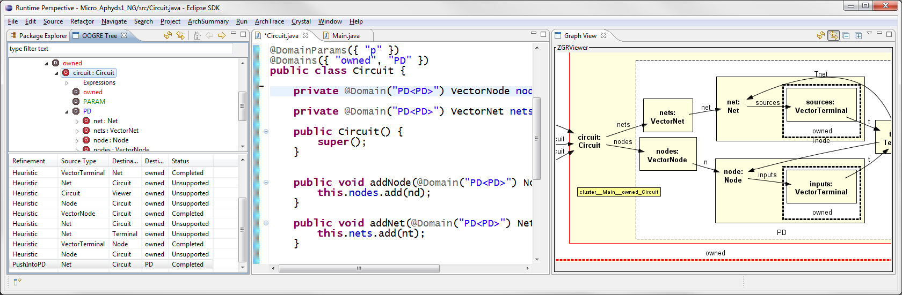

I develop practical solutions to help software architects and software engineers maintain intellectual control over the runtime architecture of their systems. To accomplish that, I use techniques in software architectures, type systems and program analysis techniques.
My research so far has included: generating code from an architectural model, synchronizing between conceptual and implementation-level architectures, evaluating languages and annotations to specify architectural intent directly in code, designing static analyses for the architectural extraction of a built runtime architecture from object-oriented implementations, checking conformance of an extracted built architecture to a desired target architecture, reasoning about quality attributes at the architectural level (particularly, security), and providing developers with useful diagrams of the runtime structure for code modification tasks.
The following research threads are listed from most to least recent. Also please refer to my publications and my software page.
Interactive Refinement of Hierarchical Object Graphs
(with Ebrahim Khalaj)

Synopsis
- A static analysis to infer ownership type qualifiers that typecheck
- Developers guide the inference through graphical refinements -- instead of adding qualifiers to the code
Publications
- Khalaj, E., and Abi-Antoun, M. Inferring Ownership Domains from Refinements. In 17th ACM SIGPLAN International Conference on Generative Programming: Concepts and Experiences (GPCE), pp.53-65, 2018.
- Khalaj, E. Automated Refinement of Hierarchical Object Graphs. Ph.D. Thesis, May 2017.
- Khalaj, E. Interactive Refinement of Hierarchical Object Graphs. M.S. thesis, Dec. 2016.
Web-Based Interface for Code Exploration and Security
Analysis
(with Radu Vanciu, Ahmad Moghimi)
Synopsis
- Developed a web-based interface to serve the results of the static analysis and send inputs;
- The goal is to use this interface for remote evaluations;
- Uses JavaScript and exchanges JSON objects with the Java server code;
- The interface shows:
- The abstract object tree, with traceability to code;
- The abstract object graphs;
- The list of refinements used by the static analysis;
- The queries and their results generated by the graph query engine,
Publications
- Abi-Antoun, M., Khalaj, E., Vanciu, R., and A. Moghimi. Abstract Runtime Structure for Reasoning about Security. Poster at Symposium and Bootcamp on the Science of Security (HotSoS), 2016.
Impact Analysis
(with Yibin Wang, Ebrahim Khalaj)
Synopsis
- Perform impact analysis based on a global hierarchical points-to graph with usage edges
- Measure improvement over using local information such as visitors
- Measure impact of resolving collections and interfaces more precisely
Publications
- Abi-Antoun, M., Wang, Y., Khalaj, E., Giang, A., and Rajlich, V. Impact Analysis based on a Global Hierarchical Object Graph. In 22nd IEEE International Conference on Software Analysis, Evolution, and Reengineering (SANER), 2015. To appear. 10 pp. [32% acceptance rate]
Developer Tools for Code Exploration and Program
Comprehension
(with Andrew Giang)
Synopsis
- Explore code using a different perspective than the commonly
used perspectives in Eclipse:
- the Java Perspective, which shows code elements in the Package Explorer, Outline View, Call Hierarchy, Type Hierarchy, etc.
- the Debug Perspective, which shows concrete values (runtime objects on the heap)
- Present to developers abstract values (abstract objects)
Publications
- Abi-Antoun, M., Giang, A., Chandrashekar, S., and Khalaj, E. The Eclipse Runtime Perspective for Object-Oriented Code Exploration and Program Comprehension. In Eclipse Technology eXchange Workshop (ETX). 6 pages, 2014. [DOI] [Slides]
Measuring Properties of Human-Guided Heap
Abstractions
(with Sumukhi Chandrashekar, Radu Vanciu, and Andrew Giang)
Synopsis
- We measure properties of abstract heaps, to better understand in what respects an abstract runtime structure differs from a code structure.
Publications
- Abi-Antoun, M., Chandrashekar, S., Vanciu, R., and Giang, A. Are Object Graphs Extracted Using Abstract Interpretation Significantly Different from the Code? In IEEE International Working Conference on Source Code Analysis and Manipulation, 10 pages. 2014. [A companion technical report is available]
- Abi-Antoun, M., Chandrashekar, S., Vanciu, R., and Giang, A. Are Object Graphs Extracted Using Abstract Interpretation Significantly Different from the Code? (Extended Version). Technical report, Wayne State University, September 2014. [Companion technical report to paper at Conference on Source Code Analysis and Manipulation'2014. The technical report has the formalization of the metrics.]
Comparative Evaluation of Approaches that Find Security Vulnerabilities
(with Ebrahim Khalaj, Radu Vanciu)
Synopsis
- There are many approaches to find security vulnerabilities including type systems and static analysis techniques, but there is little in the way of comparing their effectiveness, namely precision and recall;
- This research is building a hybrid benchmark, ScoriaBench, with hand-selected testcases from different sources, and directly comparing tools from different parts of the solution space in terms of precision and recall at finding injected security vulnerabilities;
- We compared to IBM AppScan, HP Fortify and FlowDroid (PLDI'14), a representative static taint analysis;
- On this benchmark, to date, Scoria has:
- 82% recall compared to 40-45% for AppScan/Fortify, 70% for FlowDroid;
- 86% precision compared to 76-82% for AppScan/Fortify, 82% for FlowDroid.
Publications
- Vanciu, R., Khalaj, E. and Abi-Antoun, M. Comparative Evaluation of Architectural and Code-Level Approaches for Finding Security Vulnerabilities. In Workshop on Security Information Workers (SIW), co-located with the ACM Conference on Computer and Communications Security (CCS), 8 pages, 2014.
- Khalaj, E., Vanciu, R., and Abi-Antoun, M. Is There Value in Reasoning about Security at the Architectural Level: a Comparative Evaluation. Poster at Symposium and Bootcamp on the Science of Security (HotSoS), 2014. [Poster Abstract] [Short presentation]
- Khalaj, E., Vanciu, R. and Abi-Antoun, M. Comparative Evaluation of Static Analyses that Find Security Vulnerabilities. Technical report, Wayne State University, 2014.
Scoria: Approach to Support Architectural Risk Analysis and
Find Architectural Flaws
(with Radu Vanciu)
Synopsis
- Architectural Risk Analysis is the least mature practice of finding security vulnerabilities, compared to penetration testing and static analysis; many static analysis tools focus on finding coding bugs rather than architectural flaws;
- We propose that by raising the reasoning about security vulnerabilities to the architectural level, we can find more architectural flaws;
- This research proposes extracting a forest-level view of the code to support architectural risk analysis, and enabling expressive constraints to query the representation and find architectural flaws.
Publications
- Vanciu, R. Static Extraction of Dataflow Communication for Security. Ph.D. Thesis, Wayne State University, Department of Computer Science. May 2014.
- Vanciu, R. and Abi-Antoun, M. Finding Architectural Flaws using Constraints. In IEEE/ACM Conference on Automated Software Engineering (ASE), pp. 282-292, 2013. Full research paper. [Slides] [Link to additional material] [17% acceptance rate for full research papers]
Empirical Evaluation of Object Graphs with Ownership
Domains
(with Radu Vanciu)

Percentage of shared, lent, unique, public domain, and other annotations.
Number of objects at each level of the OOG, after abstraction by
types.
Synopsis
- Researchers have proposed many ownership type systems but have not reported significant experience with most of them on real object-oriented code. Only a few systems have been implemented, and there have been few substantial case studies done with those systems.
- In order to better empirically evaluate ownership type systems, we have conducted a number of case studies applying the Ownership Domains type system to programs at a larger scale. We studied several subject systems, totaling over 100 KLOC of real object-oriented code. After annotating and typechecking the systems, we extracted global, hierarchical, Ownership Object Graphs (OOGs) using static analysis.
- In this project, we analyzed the annotations and the extracted OOGs across several subject systems. We computed metrics on the annotations and on the extracted OOGs, to gain insights into the ownership relationships latent within object-oriented code and to evaluate the effectiveness of the abstraction mechanisms in OOGs.
Publications
- Vanciu, R. and Abi-Antoun, M. Object Graphs with Ownership Domains: an Empirical Study. In Springer LNCS State-of-the-Art Survey on Aliasing in Object-Oriented Programming. 2013. To appear.
Usefulness of Ownership Object Graphs (OOGs) for
Code Modification Tasks
(with Nariman Ammar)
Synopsis
| Average time spent in the three tasks. |
| Average code explored in the three tasks. |
- Conducted the first controlled experiment of its kind to evaluate global object diagrams, in relation to class diagrams. We annotated a small (1,400 lines of Java, excluding libraries), pedagogical object-oriented framework, MiniDraw, from which we extracted both global class diagrams (CDs) and Ownership Object Graphs (OOGs). We selected 10 participants, organized into an experimental (who received OOGs) and a control group (who received CDs). We observed them use the diagrams while they perform three realistic code modification tasks (T1, T2, T3) over three hours. The tasks, e.g., "implement an undo feature", were not specifically designed to be easily answered using OOGs. Also, while many of our participants were graduate students, several had extensive---even industrial---programming experience. We measured the developers' performance using three variables: code explored, time spent, and success on a task.
- Developers who used OOGs did better than their counterparts who used CDs. Two of the developers who used OOGs completed the three tasks compared to only one developer who used only CDs. On average, developers who used OOGs performed their activities in less time (by 22%--60%), and by browsing less irrelevant code (by 10%--60%). The difference was significant in some cases, but not across all tasks. We conjecture that the differences were related to activities which involved questions about objects and their relations. Such questions are more easily answered using OOGs compared to browsing the code or by looking at CDs.
- Our successful study provided statistical generalization, and was preceded by preliminary work which provided analytical generalization. In particular, we conducted a case study on DrawLets, where we added annotations, extracted OOGs, and performed code modification tasks.
- Conducted an exploratory study in a laboratory setting. Observed three participants perform several code modification tasks while using OOGs. The tasks changed slightly between the participants, so our analysis remained qualitative. Based on our observations, we developed a taxonomy of questions that developers ask about objects and their relations.
Publications
- Ammar, N. and Abi-Antoun, M. Empirical Evaluation of Diagrams of the Run-time Structure for Coding Tasks. In Working Conference on Reverse Engineering (WCRE), 2012. To appear. This paper has a companion technical report.
- Ammar, N. and Abi-Antoun, M. Empirical Evaluation of Diagrams of the Run-time Structure for Coding Tasks.
Technical report, Wayne State University, July
2012.
Note: The tech. report contains additional details on the data analysis as well as detailed examples of the activities in which the participants engaged. - Ammar, N. and Abi-Antoun, M. Evaluation of Global Hierarchical Object Graphs for Coding Activities: a Controlled Experiment. Technical report, Wayne State University, December 2011. Note: The tech. report is a shorter version of Ammar's thesis.
- Ammar, N. Evaluation of the Usefulness of Diagrams of the Run-Time Structure for Coding Activities. M.S. Thesis, Wayne State University, Department of Computer Science. August 2011.
- Abi-Antoun, M. and Ammar, N. A Case Study in Evaluating the Usefulness of the Run-time Structure during Coding Tasks. In Workshop on Human Aspects of Software Engineering (HAoSE), co-located with SPLASH/OOPSLA, 2010. [DOI]
-
Abi-Antoun, M., Ammar, N. and LaToza, T.
Questions about Object Structure during Coding
Activities. In Workshop on Cooperative and Human Aspects of Software
Engineering (CHASE), 2010. [Paper (PDF)] [Poster (PDF)]
[DOI]
An extended version is available as Carnegie Mellon University Technical Report CMU-ISR-10-102.
Extracting Dataflow Communication from Object-Oriented
Code
(with Radu Vanciu)
Synopsis
-
Designed a sound static analysis to extract a hierarchical object graph that shows dataflow communication between objects
Publications
- Vanciu, R. and Abi-Antoun, M. Ownership Object Graphs with Dataflow Edges. In Working Conference on Reverse Engineering (WCRE), 2012. To appear. This paper has a companion technical report that has the soundness proof.
- Vanciu, R., and Abi-Antoun, M. Extracting Dataflow Communication from Object-Oriented Code. Technical report, Wayne State University, October 2011, Revised July 2012. This technical report includes the soundness proof.
- Rawshdeh, S. and Abi-Antoun, M. A Static Analysis to Extract Dataflow Edges from Object-Oriented Programs with Ownership Domain Annotations. Wayne State University Technical Report, August 2011. [Revisions to Suhib's thesis.]
- Rawshdeh, S. A Static Analysis to Extract Dataflow Edges from Object-Oriented Programs with Ownership Domain Annotations. M.S. Thesis, Wayne State University, Department of Computer Science. May 2011.
Interactive Refinement of Hierarchical Object Graphs
Synopsis
- Implemented a user-interface prototype for an Ownership Object Graph Interactive Editor (OOGIE); evaluated OOGIE on a small example;
- Work on the back-end is on-going.
Publications
- Selitsky, T. A Front-End for an Ownership Object Graph Interactive Editor. M.S. Thesis, Wayne State University, Department of Computer Science. December 2010.
- Abi-Antoun, M. and Selitsky, T.Interactive Refinement of Runtime Structure. In Workshop on Flexible Modeling Tools (FlexiTools), co-located with SPLASH/OOPSLA, 2010.
- Abi-Antoun, M., Selitsky, T., and LaToza, T. Developer Refinement of Runtime Architectural Structure. In Workshop on SHAring and Reusing architectural Knowledge (SHARK), 2010. [Paper (PDF)] [Slides (PDF)] [DOI]
SECORIA: analyzing security architectures
Synopsis
- Specialized the SCHOLIA approach to analyze security runtime architectures. SECORIA stands for Security Conformance of Object-oriented Runtime views of Architecture.
- The key difference between SCHOLIA is that SECORIA enforces security architectural intent at both the architecture and the code level, once the architecture and the implementation have been related, following the SCHOLIA approach. The target architecture is richer (has richer properties, types and constraints), and follows a DataFlow Diagram (DFD) architectural style, used in security threat modeling.
- To support security threat modeling, formalized a STRIDE-based security model as a reusable architectural style in the Acme Architecture Description Language (ADL).
- Conducted a case study on a small system, CryptoDB.
Publications
-
Abi-Antoun, M. and Barnes, J. M. Analyzing Security Architectures. In IEEE/ACM International Conference on Automated Software Engineering (ASE), pp. 3-12, 2010. [DOI] [Slides] [Link to additional material]
- Abi-Antoun, M. and Barnes, J. M. STRIDE-based security model in Acme. Carnegie Mellon University Technical Report CMU-ISR-10-106.
Static Conformance Checking of Runtime Architectural Structure
Synopsis

- Designed the first approach, SCHOLIA*, to guarantee, at compile-time, communication integrity between code in a widely-used object-oriented language (Java) and a rich, hierarchical description of the architect's intended runtime architecture.
- SCHOLIA specifies architectural intent into source code but instead of using radical language extensions to Java, SCHOLIA uses language support for annotations. Using annotations, developers express their design insight within code, as minimally invasive hints about the architecture, rather than using a specialized framework or a new language.
- SCHOLIA is modeled closely after Gail Murphy's landmark Reflexion Models work, which handles the code architecture. SCHOLIA is complementary, focuses on the runtime architecture, and is the first entirely static approach. Previous approaches to checking the conformance of runtime architectures used dynamic analyses that cannot check all possible system executions.
- SCHOLIA weaves into an end-to-end approach several technical pieces that we developed and follows the extract-abstract-check strategy. At its core, SCHOLIA incorporates an algorithm to extract from an annotated program a hierarchical object graph that provides architectural abstraction by ownership hierarchy and by types.
- An extracted object graph, however, may not be isomorphic to an architect's intended architecture, making further abstraction necessary. Designed an analysis to abstract an object graph into a Component-and-Connector (C&C) architecture in the Acme Architecture Description Language.
- Designed another analysis to check conformance and display the key differences between the built and the designed architectures. In contrast to our earlier view synchronization which makes two views identical, SCHOLIA allows the designed architecture to be more abstract than the built architecture. However, SCHOLIA still soundly summarizes in the designed architecture any additional communication that is present in the built architecture. For example, SCHOLIA can represent some objects in the built architecture as part of a connector in the designed architecture.
- Designed conformance metrics to help managers track architectural conformance over time, as well as the ability to trace from each conformance finding to the corresponding lines of code.
- In SCHOLIA, a developer can iteratively: (a) refine the annotations; (b) manually guide the structural comparison if it fails to perform the proper match; (c) correct the code if she decides that the designed architecture is correct but that the implementation violates the architecture; or (d) update the designed architecture if she considers that the implementation highlights an error or omission in the design.
* Scholia stands for static conformance checking of object-based structural views of architecture. According to Wikipedia, scholia are annotations that are inserted on the margin of an ancient manuscript. The metaphor is that this research is about supporting existing legacy, i.e., ancient, object-oriented systems, and that the approach uses annotations that other development tools can ignore.
Publications
- Abi-Antoun, M. Static Extraction and Conformance Analysis of Hierarchical Runtime Architectural Structure. Ph.D. thesis, Carnegie Mellon University, 2010. Available as Technical Report CMU-ISR-10-114.
- Abi-Antoun, M. and Aldrich, J. Static Extraction and Conformance Analysis of Hierarchical Runtime Architectural Structure using Annotations. Object-Oriented Programming Systems, Languages, and Applications (OOPSLA), 2009. [Paper (PDF)]
- Abi-Antoun, M. and Aldrich, J. Static Conformance Checking of Runtime Architectural Structure. Carnegie Mellon University Technical Report CMU-ISR-08-132. September 2008. [Report (PDF)] [This report supersedes the earlier technical report CMU-ISRI-07-119]
- Abi-Antoun, M. and Aldrich, J. Checking and Measuring the Architectural Structural Conformance of Object-Oriented Systems. Carnegie Mellon University Technical Report CMU-ISRI-07-119, December 2007. [Report (PDF)]
Static Extraction of Sound Hierarchical Object Graphs
 |
|
|
Global flat object graph for Aphyds |
Global hierarchical object graph for the same Aphyds system extracted statically using our approach. Box nesting indicates containment. |
Synopsis
- It is hard to extract meaningful object graphs from arbitrary object-oriented code. All previous static object graph analyses, points-to analyses, or shape analyses extract flat object graphs. The analyses themselves often do not scale. More importantly, a flat object graph shows a plethora of objects that are all at the same level, which makes it hard to get a high-level picture.
- The key contribution of this research is the first static analysis to extract a hierarchical and sound object graph from an arbitrary program written in a general purpose object-oriented language. The analysis relies on ownership annotations in the code, and extracts an object graph that provides architectural abstraction by ownership hierarchy and by types. Our empirical evaluation shows that hierarchy can reduce the number of objects at the top level by at least an order of magnitude.
- Soundness means that the extracted object graph shows all objects in the system and all possible relations between those objects – unlike an informal design sketch. Demonstrating soundness required formalizing the analysis and proving key soundness theorems.
- Evaluated the analysis on 38,000 lines of Java in extended examples and on 30,000 lines of Java during a week-long on-site field study with one of our industrial partners. The field study confirmed that an outside professional programmer understood abstraction by ownership hierarchy.
Publications
- Abi-Antoun, M. and Aldrich, J. Static Extraction of Sound Hierarchical Runtime Object Graphs. In ACM SIGPLAN Workshop on Types in Language Design and Implementation (TLDI), 2009. [Paper (PDF)]
- Abi-Antoun, M. and Aldrich, J. A Field Study in Static Extraction of Runtime Architectures. In 8th ACM SIGPLAN-SIGSOFT Workshop on Program Analysis for Software Tools and Engineering (PASTE), 2008. An earlier version appeared as Carnegie Mellon University Technical Report CMU-ISR-08-133, June 2008. [Paper (PDF)] [Presentation (PDF)]
- Abi-Antoun, M.
and Aldrich, J. Static Extraction of
Object-Oriented Runtime
Architectures. Carnegie Mellon University Technical Report CMU-ISR-08-127, March 2008. [Report (PDF)] - Abi-Antoun, M. and Aldrich, J. Compile-Time Views of Execution Structure Based on Ownership. In International Workshop on Aliasing, Confinement and Ownership in object-oriented programming (IWACO), in conjunction with the European Conference on Object-Oriented Programming (ECOOP), 2007. [Paper (PDF)] [Presentation (PDF)]
- Abi-Antoun, M. and Aldrich, J. A Static Analysis for Extracting Runtime Views from Annotated Object-Oriented Code (Demonstration). In Conference Companion of Object-Oriented Programming Systems, Languages, and Applications (OOPSLA), 2006. [Paper (PDF)] [Presentation (PDF)]
Reasoning about Quality Attributes at the Architectural-Level
Synopsis
- Architects use several high-level architectural views of a system One such view, the runtime architecture, models runtime entities and their potential interactions, and is essential for reasoning about quality attributes such as security, performance, reliability, and distribution.
- Runtime architectures take various forms. For example, a summer internship at Microsoft's Center for Software Excellence, in Manuvir Das's Program Analysis Group, in Redmond, WA, taught me about security threat modeling. Microsoft requires all shipping products to undergo threat modeling and credits this process with reducing by half the reported security vulnerabilities. Threat modeling uses runtime architectures where components are processes and connections represent data flow between them. During security review meetings, experts reason about diagrams manually drawn by developers but cannot ensure that a diagram accurately represents an implementation.
- Designed an XML-based representation of Data Flow Diagram (DFDs) used in security threat modeling. Integrated an analysis to help a developer validate a DFD and detect common security design flaws before a formal review with the security experts. The representation includes elemental properties that can be assigned to each architectural element, and rules defined in terms of these elemental properties that perform an architecture analysis following the STRIDE methodology. STRIDE looks for Spoofing, Tampering, Repudiation, Information disclosure, Denial of service and Elevation of privilege vulnerabilities.
- Implemented an analysis to recover an approximation of a built DFD from an implementation and check its conformance against a designed DFD by extending Gail Murphy's Reflexion Models.
Publications
- Abi-Antoun, M., Wang, D. and Torr, P. Checking Threat Modeling Data Flow Diagrams for Implementation Conformance and Security (Short Paper). International Conference on Automated Software Engineering (ASE), pp. 393–396, 2007. [DOI]
- Abi-Antoun, M., Wang, D. and Torr, P. Checking Threat Modeling Data Flow Diagrams for Implementation Conformance and Security. Carnegie Mellon University Technical Report CMU-ISRI-06-124, September 2006. [Report (PDF)]
Empirical Evaluation of Ownership Types on Existing Object-Oriented Code
"Papers have been written enough, let us see
systems!"
-- Reinhard Wilhelm
Synopsis
- Many ownership type systems are paper-only designs without tool support, or have not been evaluated in substantial case studies on real code. Most ownership types researchers have focused on the canonical iterator example, or applied ownership types to the standard design patterns in isolation. However, many expressiveness challenges arise in real object-oriented code, and when the same objects are involved in several design patterns. In addition, a standard design pattern can be implemented in multiple ways.
- The ownership domains type system (Aldrich and Chambers, ECOOP'04) has had a publicly available open-source compiler for a few years. But the tool support initially used breaking language extensions to Java, and the Barat research infrastructure, which is neither maintained nor does it support Java generics.
- Re-implemented ownership domains as backward-compatible Java 1.5 annotations, using the Eclipse infrastructure, to improve the tool support. This enabled conducting some of the largest case studies to date in applying ownership types to real object-oriented code.
- Added annotations to the following subject
systems:
- JHotDraw, a 15,000-line Java framework, rich with design patterns, and a significant example in the object-oriented programming community;
- HillClimber (part of the CIspace project), a 15,000-line Java program developed by undergraduates;
- Aphyds, an 8,000-line Java system;
- LbGrid, a 30-KLOC module from a 250-KLOC commercial system.
- An interesting finding was that adding to an existing program types intended to enforce design can identify bad design or subtle bugs in the program. For example, the annotations can highlight tight object coupling, object borrowing issues, irregular inheritance hierarchies, etc.
- This work also helped identify a number of expressiveness challenges in the ownership type system that we plan to address in future work.
Publications
- Abi-Antoun, M. and Aldrich, J. A Field Study in Static Extraction of Runtime Architectures. In 8th ACM SIGPLAN-SIGSOFT Workshop on Program Analysis for Software Tools and Engineering (PASTE), 2008. An earlier version appeared as Carnegie Mellon University Technical Report CMU-ISR-08-133, June 2008. [Paper (PDF)] [Presentation (PDF)]
- Abi-Antoun, M. and Aldrich, J. Ownership Domains in the Real World. In International Workshop on Aliasing, Confinement and Ownership in object-oriented programming (IWACO), in conjunction with the European Conference on Object-Oriented Programming (ECOOP), 2007. [Paper (PDF)] [Presentation (PDF)]
- Abi-Antoun, M. and Aldrich, J. Bringing Ownership Domains to Mainstream Java (Demonstration). In Conference Companion of Object-Oriented Programming Systems, Languages, and Applications (OOPSLA), 2006. [Paper (PDF)] [Presentation (PDF)]
- Abi-Antoun, M. and Aldrich, J. JavaD: Bringing Ownership Domains to Mainstream Java. Carnegie Mellon University Technical Report CMU-ISRI-06-110, 2006. [Report (PDF)].
Empirical Evaluation of Language-Based Solution for Specifying Architecture in Code and Enforcing Communication Integrity
Synopsis
- ArchJava, designed by Ph. D. advisor Jonathan Aldrich, is the first language to exemplify a language-based solution for specifying and enforcing architectural hierarchy and instances in code, using language constructs such as components and ports. If an ArchJava program typechecks, it is guaranteed to conform to its architecture. However, ArchJava imposes strict restrictions on passing object references. As a result, using ArchJava for an existing system requires a non-trivial re-engineering to abide by the type system's restrictions.
- The goal of this research was to better understand the process of re-engineering an existing system to ArchJava and the perceived limitations with the language or approach.
- As a first iteration, re-engineered a realistic legacy system to ArchJava to specify and enforce the architectural control flow (WICSA'05 paper). As a second iteration, added ownership annotations to specify and enforce the data sharing using ownership domains annotations (JSS'07 paper).
- The HillClimber case study is one the largest ArchJava case studies to date, with over 16,000 source lines of Java code. For comparison, the previous largest case study was around 8,000 lines.
- HillClimber was also the first case study that used the version of ArchJava described in Aldrich's Ph.D. dissertation and WICSA'08 paper, which includes both the control flow constructs (component classes and ports) and the data sharing constructs (domain and aliasing annotations).
- This research led to two key insights. First, adding ownership annotations is less invasive than converting regular Java classes to ArchJava component classes, because the ownership annotations do not affect the program's runtime semantics. Second, the ownership annotations enable architectural abstraction by making low-level objects, such as data structures, part of more architecturally relevant objects from the application domain.
Publications
- Abi-Antoun, M., Aldrich, J., and Coelho, W. A Case Study in Re-engineering to Enforce Architectural Control Flow and Data Sharing. In Journal of Systems and Software, 80(2), pp. 240--264, 2007. [Preprint (PDF)] [Published Link]. [Note: this is an invited paper that expands the WICSA'05 paper to add AliasJava annotations to the ArchJava implementation.]
- Abi-Antoun, M., and Coelho, W. A Case Study in Incremental Architecture-Based Re-engineering of a Legacy Application. In Proceedings of the 5th Working IEEE/IFIP Conference on Software Architecture (WICSA-5), 2005. [Paper (PDF)] [Presentation (PDF)]. [Note: This paper was selected as one of the "BEST papers at the WICSA 2005", and we were invited to write an extended version for the Journal of Systems and Software.]
Structural Comparison of Hierarchical Architectural Views
"Never go to sea with two chronometers; take one or
three"
-- Proverb
Synopsis
- Code generation guarantees only initial conformance and may only be applicable in certain restricted domains. A more general approach is to synchronize a designed and a built architecture after the fact.
- The key contribution was designing a novel approach for structurally comparing two hierarchical architectural views. Using structural information enables detecting: a) inserted; b) deleted; c) renamed; and d) moved elements. In contrast, previous approaches to differencing architectural views assumed that view elements have unique node identifiers, which is often not the case. Other approaches detected only insertions and deletions, and as a result lost the properties associated with an architectural element, properties that architectural-level analyses rely on.
- Incorporated the comparison algorithm into two tools. The first tool synchronizes between an Acme model representing the target architecture and a built architecture extracted from an ArchJava implementation. The second tool deals with differencing and merging two arbitrary versions of an architectural model represented in Acme.
- Performed case studies to illustrate the usefulness of the tools.
- Using ArchJava implementation also helped identify various mismatches between a conceptual-level designed architecture and an implementation-level built architecture that any synchronization approach must bridge.
Publications
- Abi-Antoun, M., Aldrich, J., Nahas, N., Schmerl, B. and Garlan, D. Differencing and Merging of Architectural Views. In Automated Software Engineering Journal, Special Issue on Selected Papers from Automated Software Engineering (ASE'06), 15(1), pp. 35--74, 2008. [Preprint (PDF)] [Published Link] [DOI]
- Abi-Antoun, M., Aldrich, J., Nahas, N., Schmerl, B. and Garlan, D. Differencing and Merging of Architectural Views. In Proceedings of the 21st IEEE International Conference on Automated Software Engineering (ASE'06), 2006. [Paper (PDF)] [Presentation (PDF)] [Presentation with animations (PowerPoint)][Aphyds Demo(AVI)][Aphyds Demo (MOV)][Duke's Bank Demo (AVI)][Duke's Bank Demo (MOV)]
- Abi-Antoun, M., Aldrich, J., Nahas, N., Schmerl, B. and Garlan, D. Differencing and Merging of Architectural Views. Carnegie Mellon University Technical Report CMU-ISRI-05-128, August 2005. [Report (PDF)] [Note: This is the most comprehensive description of the work to date. Last Revised March 2006.]
- Abi-Antoun, M., Aldrich, J., Garlan, D., Schmerl, B. and Nahas, N. Semi-Automated Incremental Synchronization between Conceptual and Implementation Level Architectures (Position Paper). Proceedings of the 5th Working IEEE/IFIP Conference on Software Architecture (WICSA-5), 2005. [Paper (PDF)] [Presentation (PDF)]
- Abi-Antoun, M., Aldrich, J., Garlan, D., Schmerl, B., Nahas, N., and Tseng, T. Modeling and Implementing Software Architecture with Acme and ArchJava (Research Demonstration). In Proceedings of the International Conference on Software Engineering (ICSE'05), May 15-21, 2005, St. Louis, Missouri, USA. [Paper (PDF) ] [Presentation (PDF)]
- Abi-Antoun, M., Aldrich, J., Garlan, D., Schmerl, B., Nahas, N., and Tseng, T. Improving System Dependability by Enforcing Architectural Intent. In Proceedings of the Workshop on Architecting Dependable Systems (WADS), 2005. [Paper (PDF)] [Presentation (PDF)]
Ensuring Conformance by Code Generation: Language-Based Solutions
Synopsis
- Inherited and completed a tool for generating ArchJava code from an architectural model in the Acme Architecture Description Language. ArchJava, designed by my Ph. D. advisor Jonathan Aldrich, extends the language to specify in code architectural components and ports.
- Studied mismatches between an Architecture Description Language like Acme for describing a conceptual architecture, and a language like ArchJava for specifying an implementation-level architecture. Some design choices included: How to represent ArchJava's private ports in Acme? Is a component more than the sum of its sub-components? E.g., Acme does not allow binding outer port to inner role, etc.
Publications
- Tool initially demonstrated at OOPSLA'04: Aldrich, J., Garlan, D., Schmerl, B., and Tseng, T. Modeling and Implementing Software Architecture with Acme and ArchJava. OOPSLA Companion, 2004. [The tool demonstration was accepted before I arrived at CMU, so I was not listed as a co-author, but the tool was not yet fully working ;-) ]
Ensuring Conformance by Code Generation: Library-Based Solutions
Synopsis
- Implemented an approach to generate starter code from an architectural model in the C2SADL Architecture Description Language onto the C2 architectural middleware framework.
- Many others emulated this work using various implementation substrates and high-level representations of the architecture.
Publications
- Abi-Antoun, M., and Medvidovic, N. Enabling the Refinement of a Software Architecture into a Design. In Proceedings of The Second International Conference on the Unified Modeling Language (UML'99), 1999.